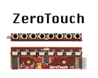

andruid | package
≡
 Hamilton, W., Garretson, O., and Kerne, A.
Streaming on Twitch: Fostering Participatory Communities of Play within Live Mixed Media,
Proc. CHI 2014, 1315-1324.
http://dx.doi.org/10.1145/2556288.2557048
[video]
Hamilton, W., Garretson, O., and Kerne, A.
Streaming on Twitch: Fostering Participatory Communities of Play within Live Mixed Media,
Proc. CHI 2014, 1315-1324.
http://dx.doi.org/10.1145/2556288.2557048
[video]
 Kerne, A., Webb, A.M., Smith, S.M., Linder, R., Lupfer, N., Qu, Y., Moeller, J., Damaraju, S.,
Using Metrics of Curation to Evaluate Information-based Ideation,
ACM Transactions on Computer-Human Interaction (ToCHI),
21(3), June 2014, 48 pages.
http://dx.doi.org/10.1145/2591677
reader's guide
Kerne, A., Webb, A.M., Smith, S.M., Linder, R., Lupfer, N., Qu, Y., Moeller, J., Damaraju, S.,
Using Metrics of Curation to Evaluate Information-based Ideation,
ACM Transactions on Computer-Human Interaction (ToCHI),
21(3), June 2014, 48 pages.
http://dx.doi.org/10.1145/2591677
reader's guide
 Toups Dugas, P. O., Kerne, A., Hamilton, W. A.
The Team Coordination Game: A zero-fidelity simulation abstracted from fire emergency response work practice,
ACM Transactions on Computer-Human Interaction (ToCHI), 18(4), December 2011, 37 pages.
http://dx.doi.org/10.1145/2063231.2063237
Toups Dugas, P. O., Kerne, A., Hamilton, W. A.
The Team Coordination Game: A zero-fidelity simulation abstracted from fire emergency response work practice,
ACM Transactions on Computer-Human Interaction (ToCHI), 18(4), December 2011, 37 pages.
http://dx.doi.org/10.1145/2063231.2063237
Carrasco, M., Kerne, A.
Queer Visibility: Supporting LGBT+ Selective Visibility on Social Media,
Proc. ACM CHI 2018 paper 250: 12 pages.

Moeller, J. and Kerne, A.,
ZeroTouch: An Optical Multi-Touch and Free-Air Interaction Architecture,
Proc. CHI 2012, 2165-2174 [23%].
Best Paper Honorable Mention.
http://dx.doi.org/10.1145/2207676.2208368
[video]